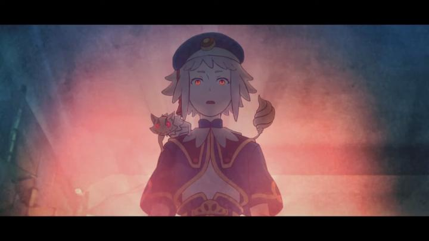

I went to a screening of "Kurayukaba" blind at the 2023 Fantasia Film Festival. It was a world premiere for the feature-length anime, so there was virtually no information about it online at the time, aside from how it was partially crowdfunded in Japan a few years prior (2018). The director and producer were in attendance for the screening, signing free posters for the audience, and I even won a giveaway of an LP record for the movie. Anyway, going into the movie without knowing anything might have been to the story's favour: there's a lot of exciting potential in this universe to expand on, even though the movie by itself feels restricted in its scope. Perhaps this could be called a "steampunk" setting, one that mixes both European and Asian design, appearing both old and futuristic. The story starts with a hapless detective and his plucky informant trying to understand a mystery of recent disappearances (including of a client before he could pay his bill), the only clue being black circles around the spot they were last. The detective thinks it might be related to "the Dark," the name for both the mysterious underground caverns and the population that lives there. Initially sending the informant, the detective reluctantly ends up going down there himself, and gets caught in a turf war between a police squad (led by a condifdent young girl in uniform) and a group of bandits. The plot spirals from there as the detective goes deeper down, despite frequently being advised to return to the surface. Although it might spiral a lot more if the movie was longer. At a lean 62 minutes, it's barely as long as three episodes of a television anime. The pacing and story feel fine until maybe the last ten minutes, when the detective recalls something that solves the mystery, and they proceed to save some of the victims. This last part is rushed and ambiguous, concluding the main plot (leaving a lot of questions of how or why it concluded) but leaving a bunch of gapping holes about side-characters, their fates, motives, and just the world in general. This is frustrating because the world feels so fascinating, and I wanted to peak around every corner to learn more about its history and culture. For the sake of story, an extra 10 minutes could have done a lot, and for the setting, this could easily be expanded into a full 12-episode series, a film trilogy, or a manga. Perhaps that was also the intention of the creators, to leave room for more should this initial film be successful. The visual design is the clear highlight of the movie. This is true for the dense setting and its fascination with guns, trains and tanks. It's also true for the character designs, reminiscent of Akihiko Yoshida's work (character desginer for "Final Fantasy Tactics"). There's a certain panache with some camera shots and the thematic stylized use of puppets to convey memories. However, it would have helped if the director was even more ambitious, as the animation was just... OK? There's a lot of talking scenes, and there was something off about the movement of everyone, as if their transitions between poses where handled or interpolated by computer automation - they look more at times like 2D "living portraits" of characters in a Japanese game than a standard 2D animation. The Japanese acting was solid, and the music is good, although I really only appreciated the score in the end credits rather than during the movie. "Kurayukaba" has a lot of potential and promise, only some of which is realized in this 2023 feature film. I hope it's not the end of the detectives adventures, as there could be a lot more to explore to make the world feel more complete.
- "Ani" More reviews can be found at : https://2danicritic.github.io/ Previous review: review_Kumamiko_-_Girl_Meets_Bear Next review: review_Kyousougiga